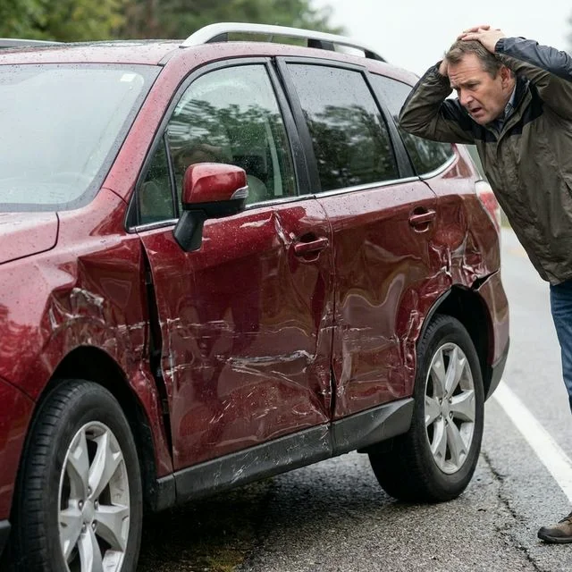
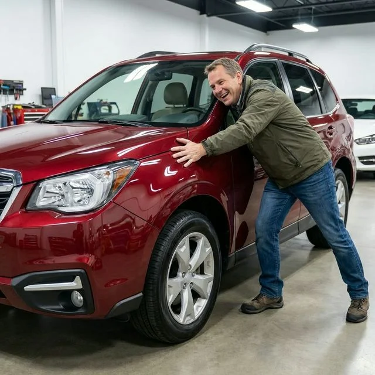

- Início
- Sobre a FG Car
- A Oficina & Estrutura
- Fale Conosco / Contato
- 🛠️ Serviços Especializados
- Cabine de Pintura Profissional
- 📝 Blog FG Car
- Localização & Como Chegar
Solda plástica profissional para trincas, quebras, deformações e ralados em para-choques dianteiros e traseiros. Reconstruímos travas, guias de fixação e alinhamos a peça perfeitamente, com economia de até 70% comparado à compra de uma peça nova.

Para-choques automotivos modernos são fabricados em ligas termoplásticas complexas (PP, ABS, TPO). Veja como restauramos a elasticidade e resistência originais na FG Car.
Remoção cuidadosa para inspecionar guias laterais, suportes de farol de milha e chicotes de sensores de estacionamento (PDC).
Costura estrutural com grampos térmicos de aço inoxidável embutidos e fusão molecular com varetas do mesmo polímero da montadora.
Aquecimento controlado para desentortar partes afundadas e aplicação de primer promotor de aderência específico para plásticos flexíveis.
Pintura na cabine pressurizada com aditivo elastificante no verniz para evitar trincas por pedriscos, finalizada com montagem alinhada.
Muitas oficinas amadoras tentam consertar para-choques colando mantas de fibra de vidro por trás. Como a fibra é rígida e o plástico do para-choque é maleável, no primeiro toque leve ou vibração térmica a fibra descola e a trinca reabre.
A verdadeira recuperação de para-choques em Osasco e região feita pela FG Car utiliza solda plástica autógena (fusão por calor e adição do mesmo polímero). Isso mantém o componente flexível, sem deformações. Além disso, recuperar a sua peça original evita comprar para-choques paralelos do mercado de reposição, que frequentemente não encaixam nos faróis nem alinham com a lataria da Funilaria de Colisão & Batidas.

Como plásticos absorvem calor e luz de maneira diferente do metal, pintar um para-choque exige ajuste técnico de pigmentação. Na nossa Pintura em Estufa Climatizada, formulamos a tonalidade exata para que a transição entre o para-choque e o para-lama dianteiro seja imperceptível.
Se o impacto também tiver deixado mossas na lataria metálica vizinha sem romper a tinta, nossos técnicos utilizam o Martelinho de Ouro Express para entregar o conjunto completo 100% perfeito.

Compare os resultados de durabilidade, alinhamento visual e impacto no seu bolso.
| Critério | Recuperação Técnica FG Car | Para-choque Paralelo Novo | Reparo Amador com Fibra |
|---|---|---|---|
| Encaixe e Folgas (Gaps) | 100% perfeito (mantém peça original) | Folgas desiguais e travas que não clicam | Empena e solta com calor do sol |
| Economia Financeira | Até 70% mais econômico que peça nova OEM | Custo alto de compra + pintura completa | Barato no início, mas quebra em 1 mês |
| Resistência a Impactos | Flexibilidade e fusão plástica de fábrica | Plástico ressecado que quebra facilmente | Racha no primeiro encostão de garagem |
| Aderência da Tinta | Primer promotor e verniz com elastificante | Frequente descascamento em lavagens | Tinta descasca junto com a fibra |
Tudo explicado de forma simples e direta pelos especialistas da FG Car.
Na grande maioria das vezes, recuperar o para-choque original é muito mais vantajoso. Peças novas originais na concessionária têm custos elevadíssimos, enquanto peças paralelas do mercado costumam ter plástico quebradiço e encaixes tortos. A recuperação mantém o padrão original com economia de até 70%.
Não, se feito com solda plástica molecular e grampos térmicos de reforço como fazemos na FG Car. O ponto soldado ganha resistência igual ou até superior ao restante da peça plástica.
Sim! Reconstruímos suportes de faróis de neblina, guias laterais de encaixe no para-lama e suportes de sensores de ré ou colisão, permitindo que a peça fique 100% firme sem trepidações ao rodar.
Ralados e trincas médias levam entre 24 e 48 horas úteis, englobando a desmontagem, solda plástica, pintura em estufa climatizada e montagem com aferição de alinhamento.